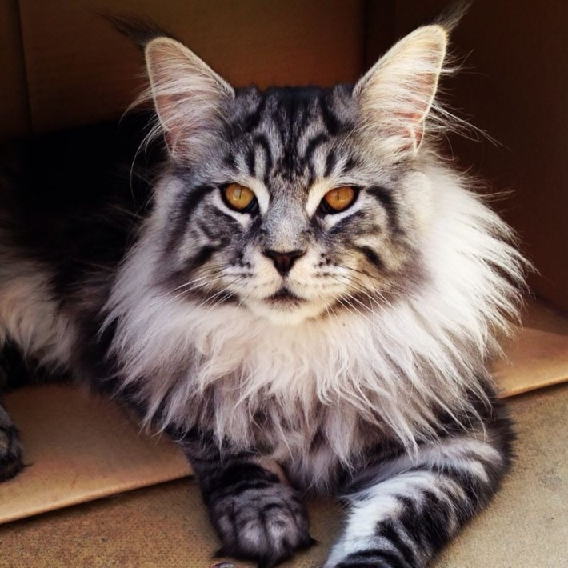
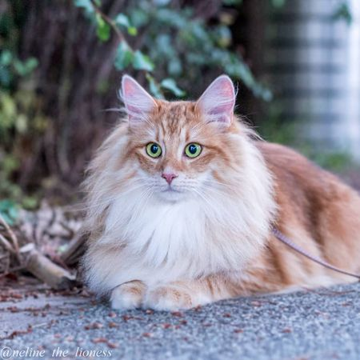
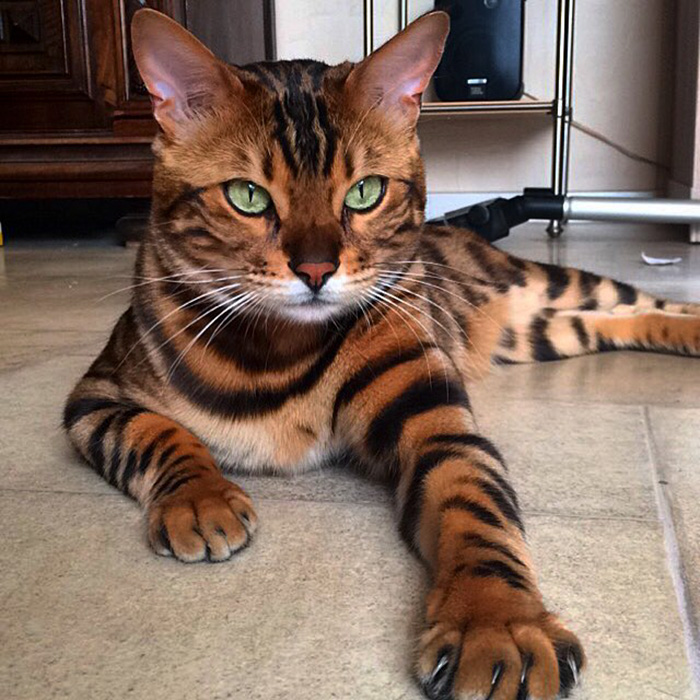
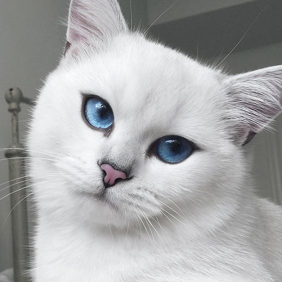
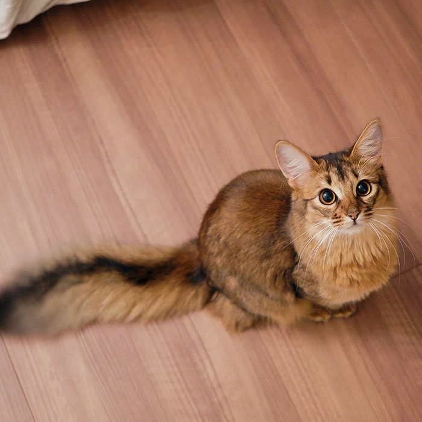

Gorgeous Cats
Gorgeous Cat Breeds
There are many beautiful breeds of cats but among my favorite are the Siamese, Maine Coon, Norwegian Forest cat, and Bengal.
Siamese
The Siamese is a cat breed native to Siam, also known as Thailand. This breeds is one of the most ancient and well known. Blue eyes and smokey color points give the siamese it's distinct look and it can come in a variety of colors including seal, lilac, chocolate and blue. The personality of the siamese is endlessly curious and intelligent but demands love and attention. This cat will cause mischive when left alone by turning on faucets, opening cabinets and seeking out new adventures in your home. (Picture 1)
Maine Coon
The Maine Coon hails from New York in the United States. One of the first thing you will notice about this cat is it's large size and fluffy plumes but dispite it's large size the Maine Coon is a gentle giant. It is a heavily boned, muscular cat with a large head and tall ears. This cat does require food portions to be monitored because they can become overweight easily. The heart of this lion is as gentle as a lamb. She may seem intimidating with her size and large paws but she reassures you with a gentle meow that she is as gentle as they come. (Picture 2)
Norwegian Forest Cat
As the name says, the Norwegian Forest cat is from Norway. This breed of cat goes back hundreds and possibly even thousands of years old. The Norwegian forest cat is the cat of norse fairy tails being one of six giant cats pulling the chariot of the norse goddess Freya. This breed is believed to have started sometime during the Byzantine Empire and was the cat of Vikings. The distinct long face and plumes of fur give this cat it's foreign beauty. This cat loves it's family but does not require constant attention. He is able to entertain himself and is content just being in the same room with people he cares about so he is basically the introvert of the cat world. He has a quiet voice and occasionally enjoys a scratch behind the ears. This is a large and athletic cat who enjoys climbing and fishing with his claws. (Picture 3)
Bengal
The Bengal is the beautiful exotic looking cat. This breed wears spots like a leopard and has the grace of a jungle cat. Long hind legs help this breed to jump onto high places and make for a more robust attitude. This cat also has soft dense fur that may glitter in the sunlight to add a cute and cuddly aspect to the appearance. Dispite the wild coloring, this cat is surprisingly easy to train. The high energy of the bengal requires plenty of play time so make sure to keep breakable objects in a safe place. The history of the bengal is from successful breeding of a wild cat and a domestic cat. This breed was created for science and the research of genetic testing. The cats needed homes after a while and they eventually cross bred with domestic cats which lead to the bengal breed. (Picture 4)




